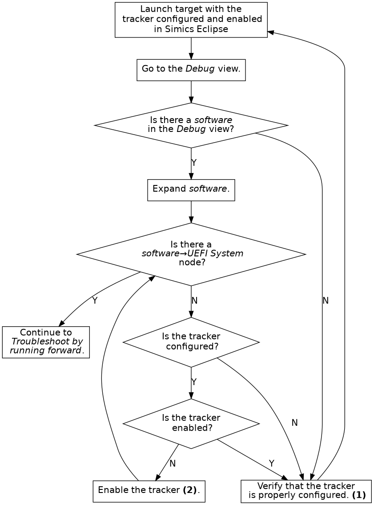
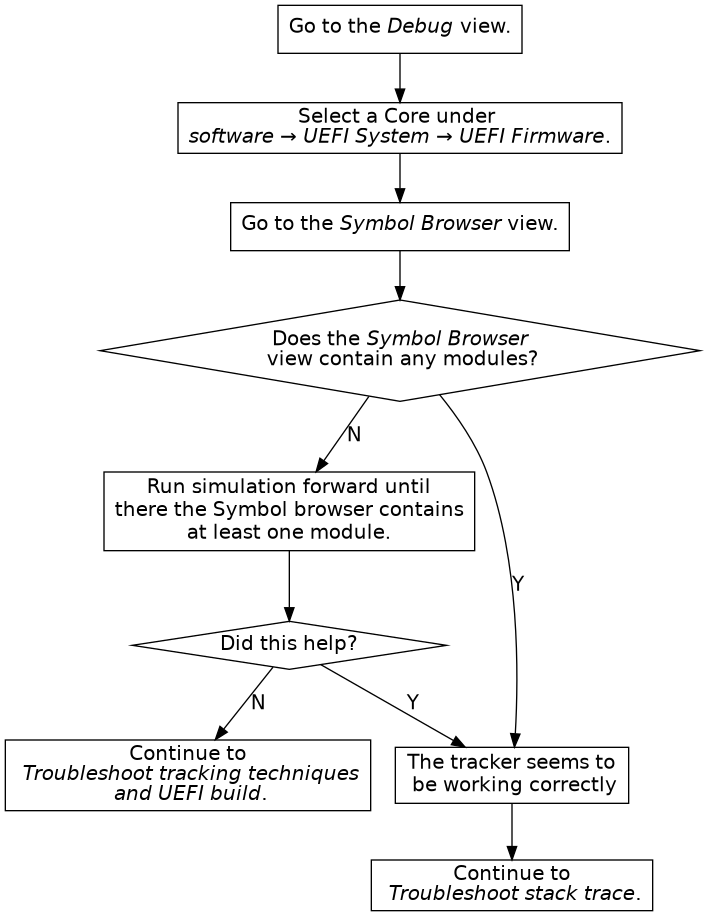
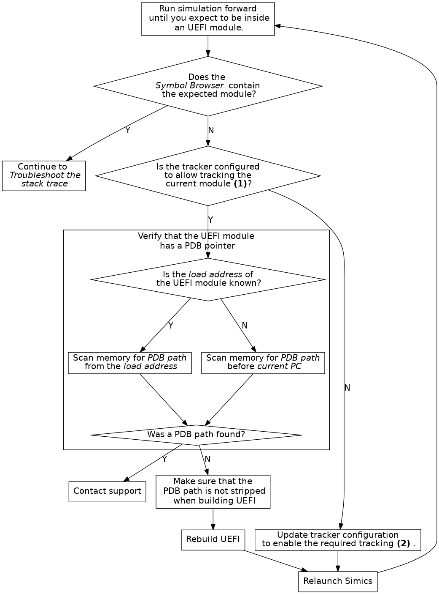
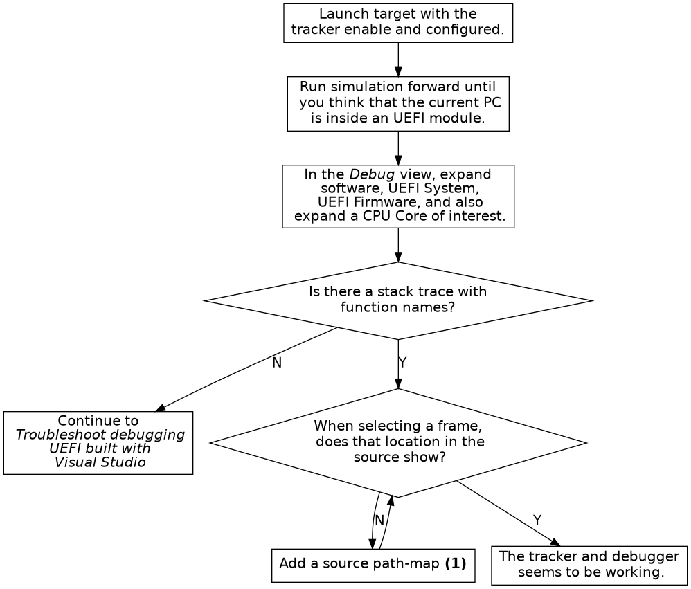
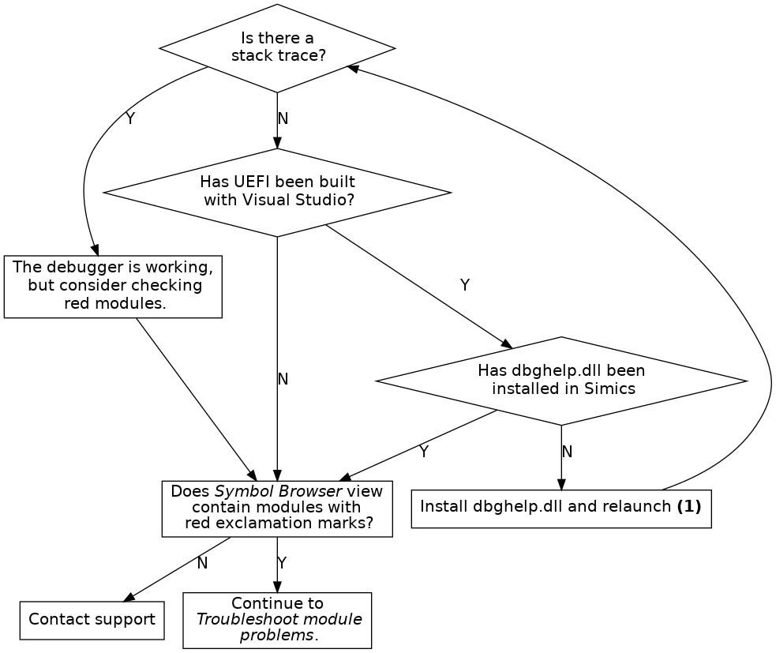
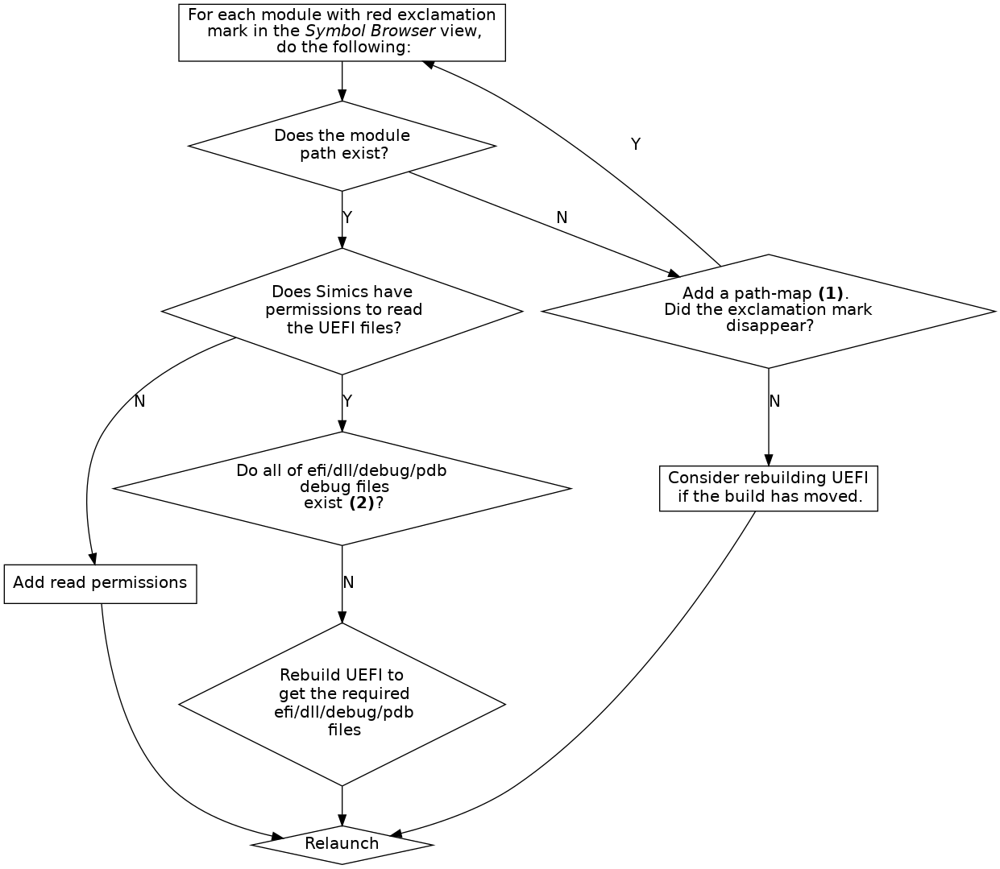

The UEFI Firmware Tracker tracks UEFI, Intel® Slim Bootloader (Intel® SBL) and Intel® Firmware Support Package (Intel® FSP) module loading and unloading to allow source code debugging of UEFI systems. The UEFI Firmware Tracker is implemented as an OS Awareness component. Read more about OS Awareness in chapter 2.
Supported target platforms for the tracker are X86 and ARM64.
While the tracker works on both Windows and Linux and can track UEFI, Intel® Slim Bootloader (Intel® SBL) and Intel® FSP, there are some details to consider when it comes to source code debugging, see section 2.16.3.
Knowing how the UEFI tracker works is optional, but understanding the basics may be useful during configuration. Tracking is handled with several techniques which handles modules loaded in the different UEFI phases.
The below tables lists the tracking techniques available on X86 (figure 7) and ARM64 (figure 8) and for which phases, or modules the tracking techniques work. Note that some tracking techniques may find other module types as well. However, it may not support unload for example.
| Tracking Technique | Default | SEC and PEI (static) | PEI (dynamic) | DXE | SMM | Intel® FSP |
|---|---|---|---|---|---|---|
| Map File | Disabled | Yes | — | — | — | — |
| Pre-DXE | Disabled | — | Yes | — | — | — |
| DXE | Enabled | — | — | Yes | — | — |
| SMM | Enabled | — | — | — | Yes | — |
| Execution (1)(2) | Enabled | Yes | Yes | — | — | Yes |
| Notification (2) | Enabled | Yes | Yes | Yes (3) | — | — |
| Reset (4) | Enabled | — | — | — | — | — |
| OS Hand-off (5) | Enabled | — | — | — | — | — |
| (1) | Detection of module unload is not supported. |
| (2) | Will not remove SEC and PEI modules when UEFI enters DXE (which DXE tracking supports). |
| (3) | Requires that UEFI has been updated with notification support, see appendix B. |
| (4) | Reset tracking does not track modules but will clear the module list when detecting a processor reset. |
| (5) | OS Hand-off tracking does not track modules, but improves simulation performance while executing the OS.. |
| Tracking Technique | Default | SEC and PEI (static) | PEI (dynamic) | DXE |
|---|---|---|---|---|
| Map File | Disabled | Yes | — | — |
| DXE | Enabled | — | — | Yes |
| Execution (1)(2) | Enabled | Yes | Yes | — |
| (1) | Detection of module unload is not supported. |
| (2) | Will not remove SEC and PEI modules when UEFI enters DXE (which DXE tracking supports). |
The UEFI firmware tracker commands are used to configure the tracker and also to provide information about the UEFI system. The commands are:
<uefi_fw_tracker>.detect-parameters
Detect parameters and load them directly by using the -load flag. Example for the target viper:
viper.software.tracker.detect-parameters -load
Parameters can also be saved to a parameter file which can then be loaded with <uefi_fw_tracker>.load-parameters. Use the param-file argument to specify a file to save.
<uefi_fw_tracker>.load-parameters
Load configuration parameters for the tracker from a configuration parameter file such a file created by <uefi_fw_tracker>.detect-parameters. Example for the target viper:
viper.software.tracker.load-parameters
<uefi_fw_tracker>.info
Show information on how the tracker was configured. Example for the target viper:
viper.software.tracker.info
<uefi_fw_tracker>.status
Show the tracker enabled state, list all UEFI modules currently loaded, and show various UEFI system information. Example for the target viper:
viper.software.tracker.status
<uefi_fw_tracker_comp>.list-modules or <uefi_fw_mapper>.list-modules
List the UEFI modules that the tracker is aware of. To list all modules, specify max=0.
For more information about the commands, see:
simics> load-module uefi-fw-tracker
simics> help uefi_fw_tracker
In order for source code debugging to work, there are some requirements that must be met:
| Compiler Tool Chain | Microsoft Windows | Linux |
|---|---|---|
| Microsoft Visual Studio | Supported (1) | — |
| ELF/DWARF compiler such as GCC | Supported | Supported |
| (1) | Requires that DBGHELP.DLL is available to TCF. |
To get the best source code debugging experience when debugging UEFI (or any other binary), please compile with as much debug information as possible and as little optimizationas possible.
If copying an already built UEFI system from another computer, it is important to keep files that are needed for debugging. There is usually a DEBUG folder for each UEFI module that contains the files needed for debugging, and it is important that at least the some of the files are kept. As an example, lets say that the module SecCore has a directory Build/.../SecCore/DEBUG. Then at least the following files must be kept
| Microsoft Visual Studio | ELF/DWARF compiler such as GCC |
|---|---|
| SecMain.efi | SecMain.efi |
| SecMain.dll | SecMain.dll |
| SecMain.pdb | SecMain.debug |
Some platform start scripts come with UEFI Firmware Tracker support. If that is not the case, a tracker configuration must be added.
Here is an example of how to configure the viper system. For more in-depth information on OS Awareness configurations, read section 2.9.
# Specify the file that will contain the tracker parameters.
if not defined tracker_params { $tracker_params = "uefi.params" }
# Load uefi-fw-tracker and insert it into the tracker hierarchy.
load-module uefi-fw-tracker
viper.software.insert-tracker tracker = uefi_fw_tracker_comp
# Detect the parameters which will be written to the $tracker_params.
viper.software.tracker.detect-parameters -overwrite param-file = $tracker_params
# Load the parameters.
viper.software.tracker.load-parameters $tracker_params
# Enable the tracker.
viper.software.enable-tracker
If the target configuration scripts configures another OS-Awareness tracker, this should be deleted first with the command <os_awareness>.delete-tracker, for example:
# Delete the current tracker to allow configuration of the UEFI tracker.
viper.software.delete-tracker
After incorporating the tracker configuration and starting the simulation, you can debug the system with the debugger commands in Simics CLI. For more information about debugging with Simics in general, see chapter 3.
This section describes common problems and how to fix them.
If debugging of UEFI does not work correctly, please perform the following steps in order:
If the problem is that the UEFI tracker degrades simulation performance:
If the code or situation that demands debugging can be reached by running simulation a specific time or by setting for example an address breakpoint (which does not require debug information and hence not a tracker either):
Unless rebuilding UEFI is needed and the same code needs to be debugged several times, saving a checkpoint (write-configuration) after reaching the situation that requires debugging, and for subsequent steps, load the checkpoint (read-configuration), and then enable the tracker may be an option.






Debugging UEFI systems compiled with Visual Studio only works on Windows hosts and require DBGHELP.DLL.
When debugging UEFI systems compiled with Visual Studio, the paths to the module binaries must be shorter than 256 characters. This is a limitation in DBGHELP.DLL.
Pre-DXE tracking does not support tracking of Terse Executable (TE) modules.
When tracking the DXE phase, breakpoints are added on each 4 MB interval in the area specified by dxe-start and dxe-size. Any address within this range that cannot be read when the tracker is enabled is ignored. If the EFI_SYSTEM_TABLE_POINTER is placed in memory that is not readable when the tracker is enabled, DXE will not be detected. As a workaround, either toggle the tracker when in DXE, or set enable_dxe_phase_mem_map_changed_hap to true.
Setting enable_dxe_phase_mem_map_changed_hap has a severe performance impact on some systems.
Multi socket system has not been tested and are not officially supported, but may work.
Only modules that have a PDB pointer containing a PDB file path can be tracked.
Execution tracking does not track unloading of modules.
For full SMM tracking both SMM and execution tracking modes must be enabled.
Only modules that have a module path (IMAGE) in the map-file will be tracked by the map-file tracker. If these modules have a valid PDB pointer, and are executed, it is possible to track them using the execution tracker.
On ARM64, Pre-DXE tracking is not supported. To track dynamic PEI modules, Execution tracking should be used.
On ARM64, Reset tracking is not supported. The recommended workaround is to add a breakpoint on reset, and toggle (disable and then enable) the tracker if reset occurs.
The UEFI Firmware Tracker supersedes the legacy UEFI Tracker. The legacy UEFI Tracker documentation has been moved to the manual Legacy UEFI Tracker. New users should use the UEFI Firmware Tracker, and existing users of the legacy UEFI Tracker are urged to migrate the tracker configuration to use the UEFI Firmware Tracker.
The UEFI Firmware Tracker has several benefits over the legacy UEFI Tracker:
When comparing the configuration required for the UEFI Firmware Tracker with the legacy UEFI Tracker:
The following is not required in the UEFI Firmware Tracker configuration but for debugging:
DBGHELP.DLL is needed for debugging See appendix A for installation details.